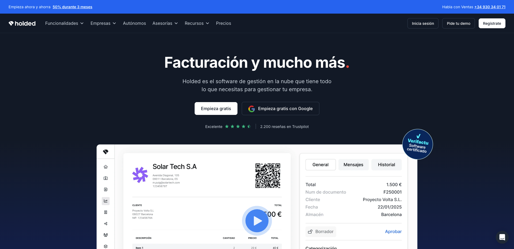
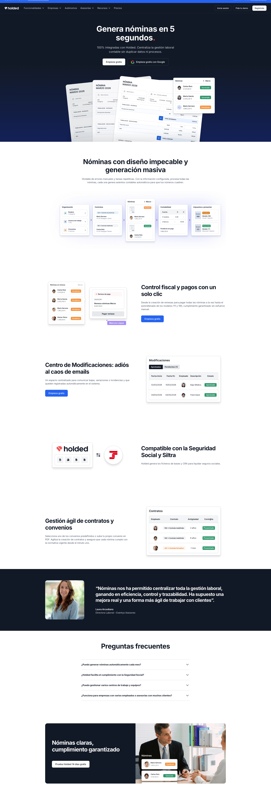
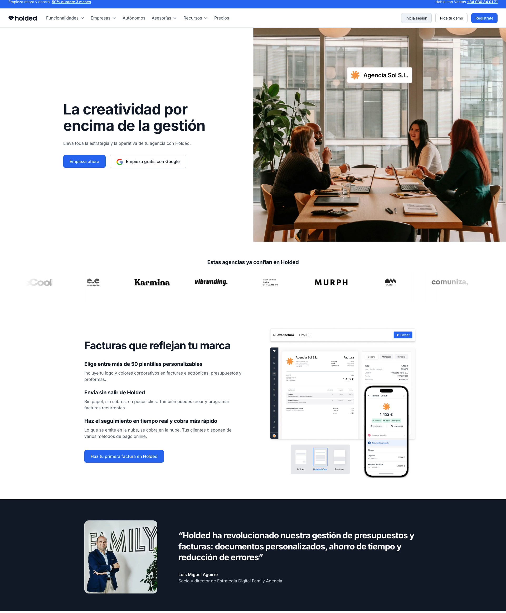
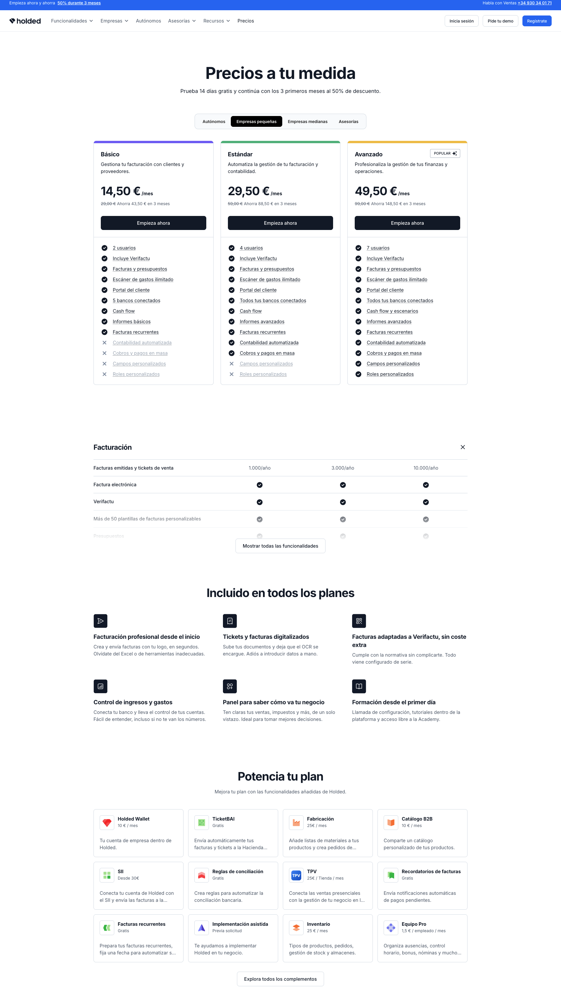
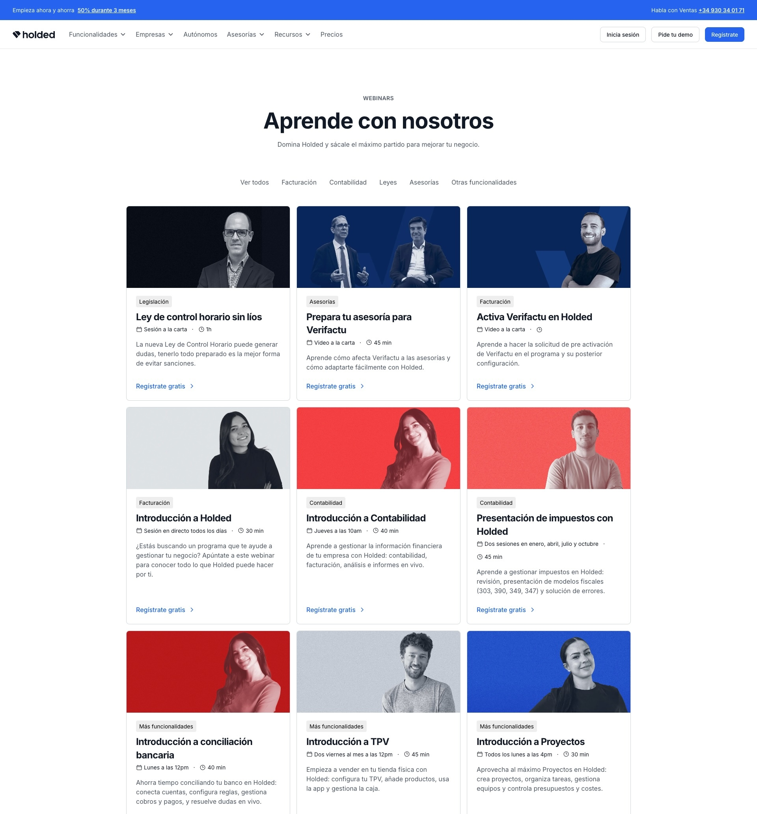

Ecosistema web
Una web cohesionada
Holded tenía una web con copys genéricos, páginas inconsistentes entre sí, poco discurso coherente y poca velocidad de construcción. Cada página había sido escrita y creada en momentos diferentes, con criterios diferentes.
El resultado era una experiencia fragmentada. Páginas sueltas, no parte de un mismo conjunto, que no hacían justicia a la unidad del producto. Holded promete una sola herramienta para gestionar todo tu negocio, su web no podía ser una serie de páginas sin coherencia de voz, tono y marca entre sí.
El reto era construir un ecosistema coherente, desde el tono de voz hasta la arquitectura de las páginas, pasando por la velocidad de producción.

De la estrategia al píxel
El proyecto abarcó cuatro grandes pilares:
Content Style Guide
Documento de referencia para todo el equipo: voz, tono, terminología oficial, reglas tipográficas y ejemplos de uso. Pasamos a un estándar compartido que escala con las necesidades del proyecto.
Páginas de funcionalidad
Rediseño y reescritura de las páginas core de funcionalidades del producto (facturación, contabilidad, tesorería, inventario, proyectos, RRHH...). Cada página con una estructura clara: solución problema → ventaja diferencial → otras ventajas → CTA.
Páginas de audiencia
Basadas en UX research con usuarios reales. En lugar de hablar de funcionalidades, hablamos de las necesidades que cada perfil de profesional necesita suplir.
Páginas de recursos
Una serie de herramientas gratuitas para aprender a usar Holded, entretenerse, informarse sobre el mundo del emprendimiento y estar al día de las leyes.




Elementos que marcaron diferencias
Research antes de escribir una sola palabra
Las páginas de audiencia nacieron de entrevistas y análisis de comportamiento. Entender qué palabras usaban los usuarios (no las que usaba el equipo de producto) cambió radicalmente el ángulo de los titulares.
De Strapi a Webflow
Se migró de plataforma y construimos los templates en Webflow con componentes reutilizables. Esto redujo el tiempo de publicación de nuevas páginas de días a horas, y eliminó la dependencia de desarrollo para cambios.
Jerarquía de mensajes
En cada página, primero definí la jerarquía de mensajes (qué necesita saber el usuario en cada momento del scroll) y luego escribí el copy.
Un ecosistema que convierte
En 2026, la web recibió más de 4 millones de visitas orgánicas frente a las 3,5 del año anterior, con una media de tasa de conversión del 7 %, con algunas páginas superando más del 9% de conversión.
9,6%
Conversión en la página de programa de facturación
127
Nuevas páginas creadas
Top 3
Resultados de Google